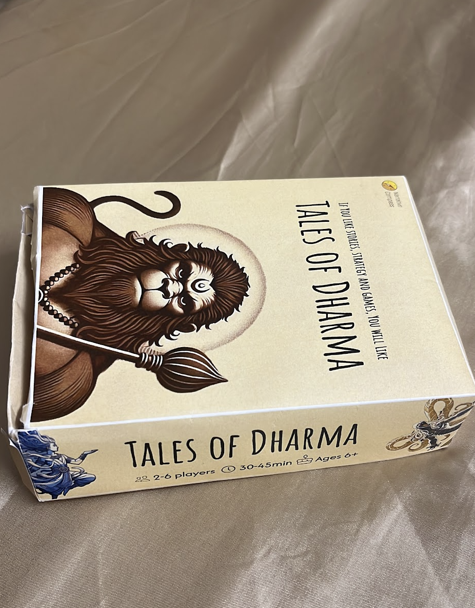
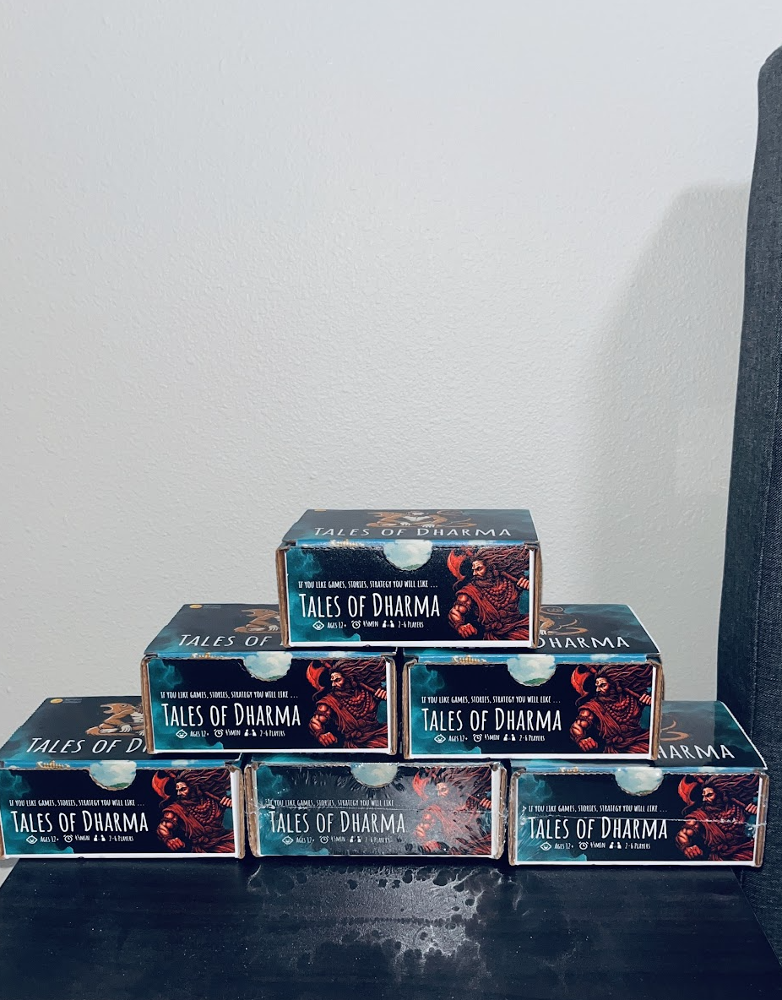

Most serious games teaching religion and culture are designed as single-player experiences, focusing on individual learning through structured gameplay. But religion and culture are fundamentally community-driven, built on collective storytelling and intergenerational knowledge transfer.
Single-player religious games often fail because they teach to individuals in isolation rather than fostering the communal storytelling essential to authentic religious experience. A player might learn that Lakshmi is the goddess of wealth or that Diwali celebrates light over darkness, but this knowledge stays isolated. Individual facts learned in solitude rather than living wisdom shared within community.
This case study documents Tales of Dharma, a card game designed to address this fundamental misalignment. Rather than another educational game about Hindu mythology, Tales of Dharma creates a space for collective storytelling where 2-6 players share personal memories, family traditions, and cultural knowledge sparked by mythological cards.
The Problem
"Players learn information but don't develop the personal connections that make religion meaningful beyond academic knowledge."— Research Gap
Traditional educational games about religion teach individuals facts about deities, texts, or practices through structured gameplay. This knowledge stays isolated, individual facts learned in solitude rather than living wisdom shared within community.
Religious and cultural understanding is not just about knowing information. It is about participating in ongoing traditions, sharing stories across generations, and feeling connected to a community of practitioners. When a parent shares how their family celebrates a festival differently than their neighbor, that is where authentic cultural transmission actually happens.
Parents and educators consistently told me that existing religious games felt sterile, more like quizzes with mythological themes than authentic cultural experiences. The question that drove the design: what if a game could create space for community-driven storytelling rather than solo learning?
My Approach
Design Phase
Created card game mechanics that incentivize storytelling and community participation rather than individual achievement.
Iterative Development
Refined card designs through multiple iterations based on playtesting feedback, discovering that less information encouraged more storytelling.
Qualitative Evaluation
Conducted 10 playtesting sessions with 2-6 players each, analyzing video footage to understand how gameplay facilitated community storytelling.
Packaging Refinement
Iterated from single-box to corrugated material packaging based on durability and user feedback from real-world usage patterns.
Commercial Launch
Launched commercially with over 1000 copies sold, confirming market demand for community-driven religious games.
Key Outcomes
Community-driven gameplay proved more effective for religious education than single-player approaches.
Designing for Community Storytelling
The core design challenge was creating gameplay mechanics that incentivize community participation rather than individual achievement. Most card games reward competitive optimization or strategic decision-making, mechanics that push players to focus on winning rather than sharing stories. Tales of Dharma needed something different.
Design Principle: Incomplete Information as Invitation
By providing evocative illustrations and minimal text rather than comprehensive encyclopedia entries, cards create "knowledge gaps" that naturally prompt players to fill in details from their own experiences. This is intentional: facilitating collective sense-making rather than passive reception of information.
Card Design Philosophy
Each card in Tales of Dharma features mythological characters, deities, and narrative elements from Hindu traditions. Rather than providing complete background information, cards serve as storytelling prompts that encourage players to share their own knowledge, memories, and interpretations.
When a player draws a card featuring Hanuman, they might share their family's tradition of visiting a particular Hanuman temple, or explain how their grandmother told stories about Hanuman's devotion to Rama. The card becomes a catalyst for personal narrative, not just information transfer.
Card Design Iterations
The card designs went through multiple rounds. Early versions included more text and background information, but we found that stripping information down actually encouraged more storytelling during play. Less on the card meant more in the room. The final designs balance visual specificity with narrative flexibility.
Two problems showed up early that I did not anticipate and had to work through before the game was ready. The first was session length. Early playtests ran either too long (groups getting so absorbed in stories they never finished a round) or too short (groups treating it like a quiz and blowing through cards in fifteen minutes). Neither felt right. The second problem was harder: the mythology and narrative context were not reaching players clearly enough through the card mechanics alone. Players would draw a card featuring a figure like Jatayu and engage with it only at a surface level, missing the richer story threads that would have made the moment meaningful. The cards were prompts without enough anchor.
Fixing both problems required bringing in more voices. I consulted additional cultural experts, including a Sanskrit scholar and two game designers who had worked on narrative-driven tabletop games, to find ways to weave story context directly into gameplay rather than leaving it implicit. The result was a structural change: certain cards now come with a short oral prompt printed on the back, not a definition, but a single sentence that opens into a story. This gave players who had no prior knowledge a foothold without removing the space for people who did know the stories to go deeper.

.png)

Iterative card designs and final designs measuring 2.5 inches by 3.5 inches.
Qualitative Playtesting
To evaluate whether community-driven gameplay effectively fosters cultural connection, I conducted 10 qualitative playtesting sessions with 2-6 players each. Each session was video-recorded to enable detailed analysis of how gameplay facilitated storytelling and cultural engagement.
Study Design
- 10 playtesting sessions with groups of 2-6 participants playing Tales of Dharma together
- Video analysis: recorded sessions captured verbal storytelling, card interactions, and group dynamics
- Thematic analysis of transcripts to identify patterns in storytelling behaviors and cultural engagement
- Sessions included family groups, friend circles, and intergenerational players to understand varied community contexts


Scenes from playtesting sessions showing community engagement and storytelling.
Key Findings from Playtest Analysis
One session in particular changed how I thought about the whole game. A grandmother and her two teenage grandchildren sat down to play. The grandmother spoke Telugu fluently; the grandchildren understood it but responded mostly in English. I expected the language gap to create friction. Instead, when a card featuring Saraswati came up, the grandmother started telling a story in Telugu about a childhood memory of her school's Saraswati Puja. The grandchildren could not follow every word, but they leaned in. One of them pulled out a phone and looked up the festival while she was still talking. By the end of the story, all three were arguing (warmly) about which family tradition was "correct." None of that was in my design. I had not planned for a mechanism that would make a grandmother's childhood memory compelling to a seventeen-year-old. But the card created a gap and the gap pulled the story out.
That session prompted a redesign of how I thought about the card prompts. I stopped trying to make the mythology legible and started trying to make it enticing enough that players would want to ask questions. There is a difference.
Finding 1: Cards Triggered Personal Storytelling
Analysis of video footage showed that participants frequently shared personal stories when specific cards appeared. A card featuring a temple prompted players to describe places of worship they had visited, while character cards sparked family memories of mythological stories heard in childhood.
Finding 2: Collective Storytelling Enhanced Cultural Connection
Participants consistently reported feeling more connected to their faith and culture through shared gameplay than through solo learning. The act of collaboratively exploring mythological narratives created a sense of community engagement that individual educational games couldn't replicate.
Finding 3: Places of Worship Became Central to Discussions
Cards featuring deities and mythological places frequently prompted discussions about real-world locations: temples visited during pilgrimages, local celebrations, family traditions at specific shrines. The connection between mythological narrative and lived experience turned out to be where the most meaningful conversations happened.
Packaging Iteration
Packaging became a critical design consideration as we moved from prototypes to commercial production. Initial designs used single-box packaging, but playtesting revealed durability and usability issues that required iteration.
The first production run used standard cardboard box packaging with all cards in a single container. Functional, but players reported the box did not hold up to repeated opening and closing during family sessions. Cards became hard to organize and the box showed wear quickly.
Subsequent production runs switched to corrugated material boxes with internal dividers. Storage improved, cards survived transport better, and the structural integrity held through extended use. Not a glamorous design problem, but a real one.



Packaging iterations: From single box to corrugated material boxes with improved durability.
Commercial Validation
Over 1000 copies of Tales of Dharma have been sold. The commercial outcome confirmed demand, but the buyer mix was not what I expected going in.
Who Actually Bought It
I built the game imagining a fairly specific user: South Asian diaspora families trying to stay connected to Hindu mythology across generations. That group did buy it, and in numbers. But the game also sold to schoolteachers who were not South Asian, to university professors using it in courses on world religion, and to people who had no prior connection to Hinduism but found the storytelling mechanic itself interesting as a family activity. This breadth was not part of my original frame. It suggested that the core mechanic, creating structured space for personal storytelling through cultural prompts, was doing something more generalizable than cultural education in a narrow sense.
Conclusion
Tales of Dharma demonstrates that designing religious educational games requires fundamentally different approaches than designing solo learning games. When games encourage community participation, collective storytelling, and shared knowledge-building, they can foster deeper connections to faith and culture.
The clearest design lesson was about restraint. Every instinct early on pushed me toward putting more on the cards, more context, more story, more explanation. Every good playtesting session pushed back against that. The game got better each time I removed something and trusted the people in the room to fill the space.
The framework, structured prompts that invite personal storytelling rather than correct answers, could work for other traditions and contexts. What interested me most by the end was not the specific mythology but the shape of the interaction it unlocked. Games that make room for disagreement, for partial knowledge, for a grandmother remembering something differently than the official story, those are the ones that actually transmit culture.
Skills & Methods Demonstrated
Game Design, Card Game Mechanics, Iterative Design, Playtesting
Qualitative Methods, Video Analysis, Thematic Analysis, User-Centered Design
Product Iteration, Packaging Design, Commercial Launch
Community Engagement, Cultural Education, Market Validation